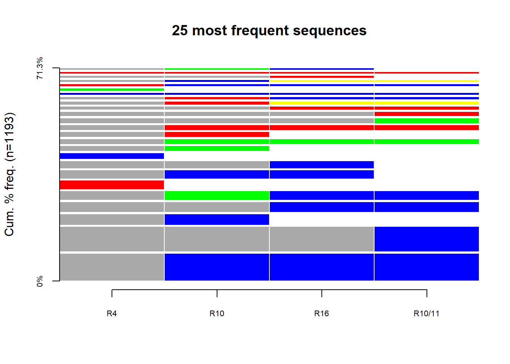
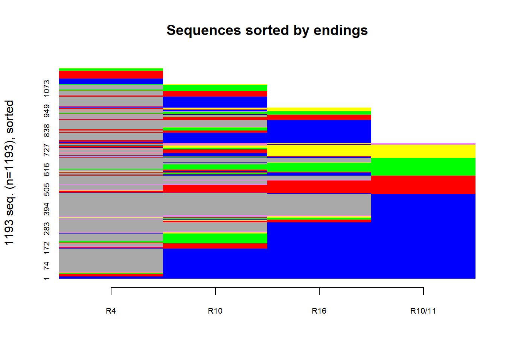

library(dplyr)
Attaching package: 'dplyr'The following objects are masked from 'package:stats':
filter, lagThe following objects are masked from 'package:base':
intersect, setdiff, setequal, unionlibrary(TraMineR)
TraMineR stable version 2.2-10 (Built: 2024-05-22)Website: http://traminer.unige.chPlease type 'citation("TraMineR")' for citation information.library(TraMineRextras)TraMineRextras stable version 0.6.7 (Built: 2024-04-27)Functions provided by this package are still in test and subject to changes in future releases.library(seqimpute)
wide <- readRDS("wide-accomm-2.rds")
## Impute internal gaps
sequence <- seqimpute(
wide, var = 6:9, m = 1, timing = TRUE,
npt = 0, nfi = 0
)iteration : 1 / 1
[1] "Imputation of the internal gaps..."
[1] "Step 1/2"
[1] "Step 2/2"### Sequence Mining
sequence.alphabet <- c(
'government supported',
'temporary/dependent',
'self-sufficient',
'in Ukraine',
'in other country'
)
sequence.scode <- c(
"GOVSUP",
"TMPDEP",
"SLFSUF",
"IN.UKR",
"IN.OTH"
)
sequence.lab <- c(
'government supported',
'temporary/dependent',
'self-sufficient',
'in Ukraine',
'in other country'
)
##
sequence.seq <- seqdef(
data = sequence$imp$imp1,
var = 1:4,
alphabet = sequence.alphabet,
states = sequence.scode,
labels = sequence.lab,
cnames = c("R4", "R10", "R16", "R10/11"),
# cnames = 1:4,
xtstep = 1,
cpal = c("blue", "red", "green", "yellow", "violet"),
left = NA,
right = "DEL"
) [!] found '-' character in state codes, not recommended [>] found missing values ('NA') in sequence data [>] preparing 1193 sequences [>] coding void elements with '%' and missing values with '*' [!!] 4 empty sequence(s) with index: 8,486,644,1193
may produce inconsistent results. [>] state coding: [alphabet] [label] [long label] 1 government supported GOVSUP government supported 2 temporary/dependent TMPDEP temporary/dependent 3 self-sufficient SLFSUF self-sufficient 4 in Ukraine IN.UKR in Ukraine 5 in other country IN.OTH in other country [>] 1193 sequences in the data set [>] min/max sequence length: 0/4## 25 Most frequent sequences
seqtab(
sequence.seq, idxs = 1:25
) Freq Percent
*/1-GOVSUP/3 133 11.15
*/3-GOVSUP/1 120 10.06
*/1-GOVSUP/1 54 4.53
*/2-GOVSUP/2 51 4.27
*/1-SLFSUF/1-GOVSUP/2 44 3.69
TMPDEP/1 44 3.69
*/1-GOVSUP/2 42 3.52
*/2-GOVSUP/1 37 3.10
GOVSUP/1 31 2.60
*/1-SLFSUF/1 27 2.26
*/1-SLFSUF/3 27 2.26
*/1-TMPDEP/1 26 2.18
*/1-TMPDEP/3 26 2.18
*/3-SLFSUF/1 26 2.18
*/3-TMPDEP/1 24 2.01
*/2-TMPDEP/2 18 1.51
*/1-TMPDEP/1-IN.UKR/2 17 1.42
*/1-TMPDEP/1-GOVSUP/2 15 1.26
GOVSUP/4 14 1.17
SLFSUF/1 14 1.17
TMPDEP/1-GOVSUP/3 14 1.17
*/1-GOVSUP/1-IN.UKR/2 13 1.09
*/2-TMPDEP/1 13 1.09
TMPDEP/4 11 0.92
*/1-SLFSUF/1-GOVSUP/1 10 0.84seqplot(
seqdata = sequence.seq,
type = "f",
idxs = 1:25,
with.legend = FALSE, border = FALSE,
cex.axis = 0.65,
main = "25 most frequent sequences"
)
# Sorted by end state
seqplot(
seqdata = sequence.seq,
type = "I",
idxs = 0,
with.legend = FALSE,
sortv = sortv(sequence.seq, start = "end"),
cex.axis = 0.65,
main = "Sequences sorted by endings"
)